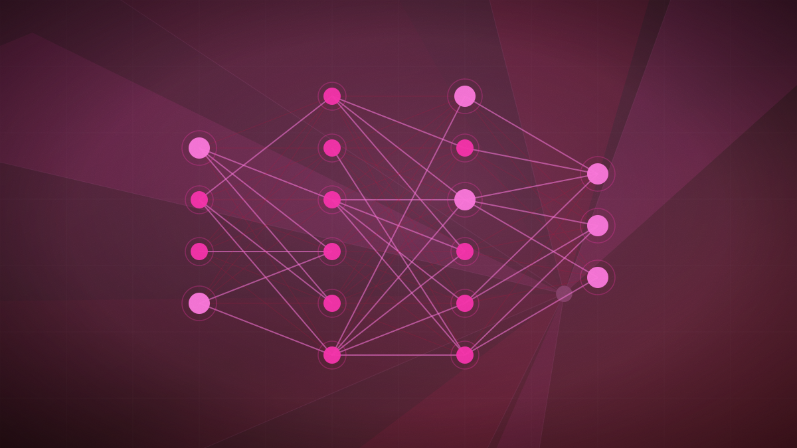

Mistral AI shifts strategic focus to sovereign open-weight enterprise models
The European champion focuses on self-hosted and domain-specific AI, partnering with Cloudera to provide data control to enterprises.

Original cover art, generated for this story. THE VISSION does not republish third-party press imagery.
- Mistral AI has announced a strategic shift to 'sovereign, open-weight AI,' distancing itself from direct competition with closed U.S. giants.
- The company is focusing on self-hosted and on-premise deployments optimized for sensitive sectors like defense and finance.
- Mistral has partnered with Cloudera to allow enterprises to deploy its models directly on governed, internal data platforms.
Mistral AI, the leading European artificial intelligence developer, has formally shifted its strategic focus toward 'sovereign, open-weight AI,' declaring this approach the core technology frontier for the enterprise market. The strategic shift represents a deliberate pivot away from competing solely on general-purpose public benchmarks against closed-source American giants like OpenAI and Anthropic. Instead, Mistral is tailoring its models and business integrations to meet the strict data residency and security requirements of European enterprises and public institutions.
Following its record-breaking €3 billion Series D funding round led by Samsung Electronics, which valued the Parisian startup at €21 billion, Mistral is investing heavily in on-premise and isolated infrastructure stacks. The company's models, including its flagship open-weights Mistral Nemo and Mistral Small, are designed to be deployed within self-hosted, secure private clouds. This strategy is tailored specifically for highly regulated and mission-critical industries—including defense, healthcare, and banking—where organizations are legally barred from sending sensitive data to external API endpoints.
To accelerate adoption, Mistral has announced a strategic partnership with data management giant Cloudera. The collaboration enables enterprises to deploy Mistral’s open-weight models directly within Cloudera’s governed private cloud environment. This hybrid architecture allows businesses to utilize advanced AI reasoning and generative capabilities directly on their own internal databases without moving their proprietary information. Mistral’s leadership asserts that providing organizations with complete physical and legal control over their models and weights is the only sustainable path for enterprise AI.
Mistral’s strategic pivot is a realistic recognition that competing in a brute-force capital war against U.S. hyperscalers is unsustainable for European startups. By focusing on 'sovereignty' and self-hosted open-weights, Mistral is carving out a highly defensible niche in the global market. It positions the startup as the primary partner for organizations and governments that refuse to cede digital sovereignty or data control to American-hosted cloud environments, creating a clear regulatory and commercial barrier against its closed-source competitors.